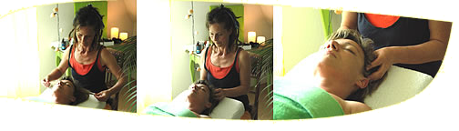
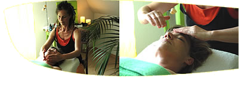
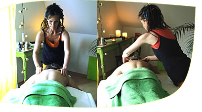
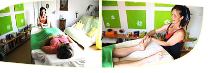

Aroma-Massage
Kopfmassagen: Waldmoosgeflüster
Der Kopf wird mit dem Herzen verbunden, damit Sie völlig entspannen. Unser Stress beginnt im Kopf. Hier liegt die Küche für gute und schlechte Gefühle und je nach Gemütslage für verspannte Muskelpartien im Körper. Durch das Massieren der dünnen aber kräftigen Muskelschicht um unsere Gehirnschale kann die Lebensenergie zirkulieren. Es rinnt uns ein behaglicher Schauer durch den ganzen Körper, lässt uns schnurren wie eine Katze.
 30,- EUR
30,- EURinkl. ca. 30 min Vorbereitungs- u. Nachruhezeit
Gesichts-, Hals- und Dekolleté-Massage: Blume der Blumen
Ein entspanntes Gesicht, auf dem sich der Glanz innerer Harmonie spiegelt, ist schöner als jedes Make-up. Eine Massage mit der Blütenessenz des Ylang-Ylang - Baumes umschmeichelt uns mit seinem sinnlich warmen Duft wie eine zärtliche Umarmung.
Es heißt, er löse die Spannung im Körper und die Sorgen im Herzen.
30,- EURinkl. ca. 30 min Vorbereitungs- u. Nachruhezeit
Rückenmassagen: Sanftes weiches Ruhekissen
Im duftenden, sanft wiegenden Berggras, umgeben vom Zirpen der Grillen wird der unsichtbare Rucksack abgestreift. Überlassen Sie sich dem Wohlgefühl von Heiterkeit und Erleichterung.
Warme Sonnenstrahlen schmiegen sich freundlich um Ihren Körper - Anspannung, Hektik und Stress fallen allmählich ab.
35,- EUR40 min
45,- EUR50 min
55,- EUR60 min
65,- EURinkl. ca. 30 min Vorbereitungs- u. Nachruhezeit
Arm- und Handmassage: Wenn Hände lächeln können
Glückshormone werden Sie zwischen Mond- und Venushügel beim Liften von Kreislauf und Psyche begrüßen. Denn entlang des Unterarms bis zu den Fingern verläuft nicht nur der Herzmeridian, hier werden viele Energieströme freigesetzt. Mit dem Aroma der Grapefruit locken wir die Endorphine heraus, die uns vitalisieren und unseren Geist froh machen.
30,- EURinkl. ca. 30 min Vorbereitungs- u. Nachruhezeit
Bauchmassage: Der inneren Lebenskraft vertrauen
Die östlichen Weisen haben den Sitz der menschlichen Lebenskraft in der Mitte des Menschen gesehen, in unserem Bauch. Bei dieser Massage werden wir wieder Freundschaft mit ihm schließen damit sich manches Geheimnis nicht mehr so schnell dort niederlassen kann, denn unbewusst packen wir Vieles in den Bauch.
30,- EURinkl. ca. 30 min Vorbereitungs- u. Nachruhezeit
Beinmassage: Das Kunststück
Es ist die Einheit zwischen Erd- und Luftelement zu meistern, um fest auf der Erde zu stehen, ohne dabei Flexibilität und Beweglichkeit zu verlieren. Stellen wir das Gleichgewicht zwischen der Aufnahme und der Abgabe von Energie durch eine Beinmassage wieder her. Sie wird unsere Beine beschwingen und uns Leichtigkeit und Standfestigkeit schenken.
35,- EURinkl. ca. 30 min Vorbereitungs- u. Nachruhezeit
Fußmassage: Gehen wie auf Wolken
Unsere Füße sind besonders dankbar für Zuwendungen. Sehen wir in unserem Fuß unseren Freund, dem es nach einer Berührung leichter fällt, über Stock und Stein zu gehen. Fast haben wir die belebende Wirkung eines Fußbades vergessen - oder wie es sich anfühlt, barfuss über Wiesen zu laufen.
Der Fuß ist eines der größten Wunder des menschlichen Körpers. Er besteht aus einem harmonischen Zusammenspiel von vielen einzelnen Knochen und Wölbungen. In der Fußsohle laufen besonders viele Nervenenden zusammen. Durch eine Berührung, die wie ein warmer Strom durch den ganzen Körper zieht, wird das Nervensystem in seiner Gesamtheit beeinflusst. Wir sind in der Balance.
35,- EUR40 min
45,- EURinkl. ca. 30 min Vorbereitungs- u. Nachruhezeit
Ganzkörpermassage: Wohlfühlkomposition
Zeit für sich ganz allein. Wunderbare Augenblicke der völligen Entspannung und des Wohlbefindens werden Sie erleben, umhüllt von aromatischen Düften und leiser Musik. Diese Massage ist ein Entspannungserlebnis, das ausgleichend, beruhigend, harmonisierend und kräftigend wirkt. Tauchen Sie mit allen Sinnen in wunderbare Augenblicke des Wohlbefindens ein.
95,- EURinkl. ca. 30 min Vorbereitungs- u. Nachruhezeit
Brautmassage: Auf Händen getragen werden
Zart wohltuende Düfte begleiten Sie durch Ihren Sonnentag. Welch aufregende Minuten er auch bringen mag, entspannend wandeln Sie dahin mit Rosenduft oder Jasmin ...
72,- EURinkl. ca. 30 min Vorbereitungs- u. Nachruhezeit
Erdbeerernte und Fußballfeld: Massage für Kinder
Entspannungsmassagen mit Geschichten aus Natur und alltäglichen Erlebnissen oder mit leiser Musik.
25,- EURinkl. ca. 30 min Vorbereitungs- u. Nachruhezeit
Habe ich Sie neugierig gemacht? Schreiben Sie eine E-Mail oder rufen Sie mich an.